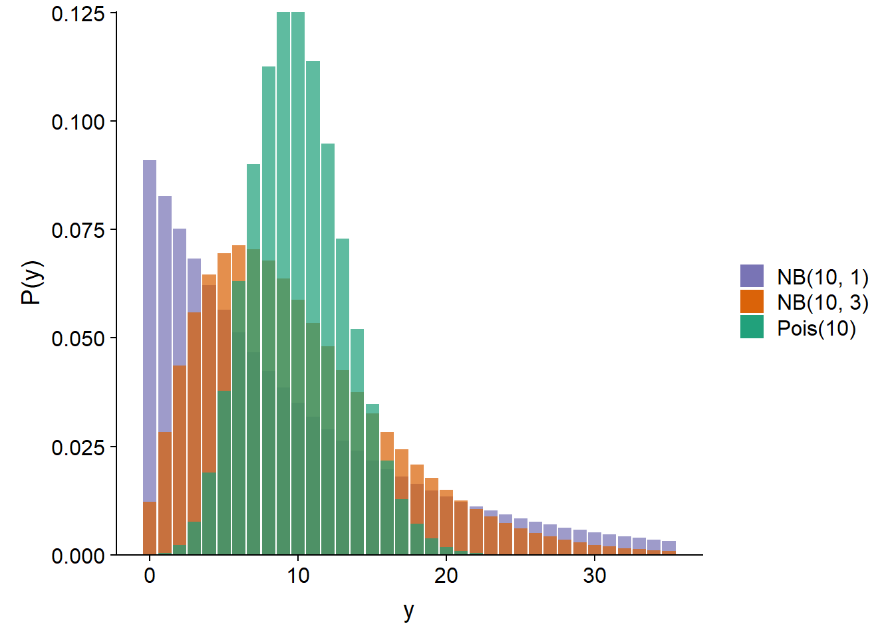
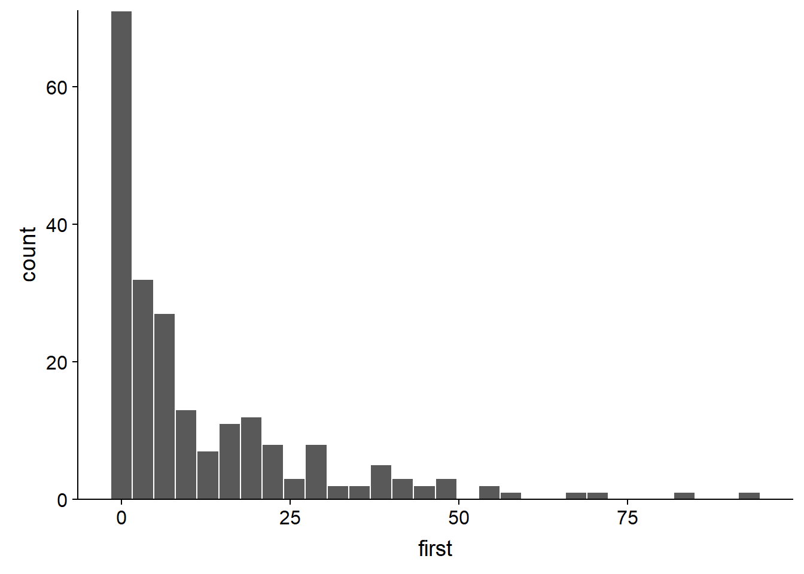
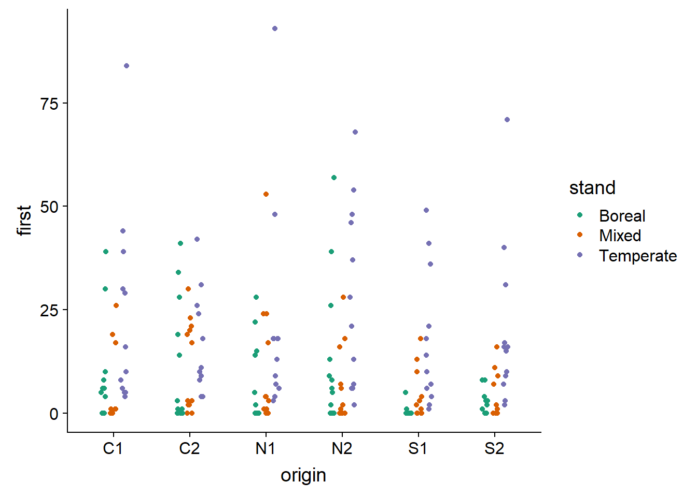
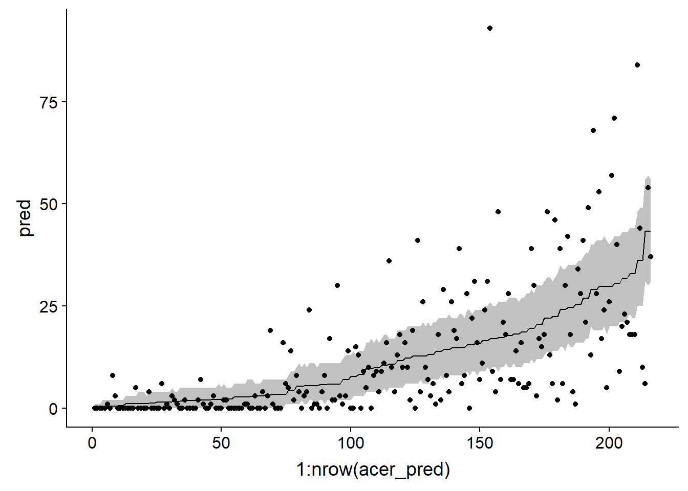
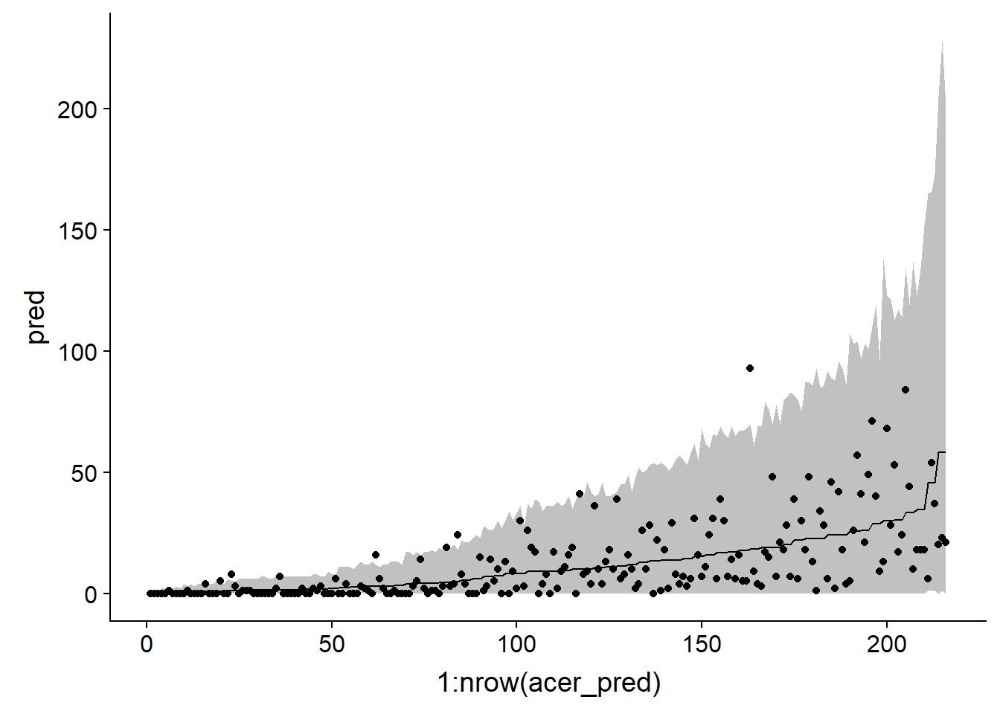
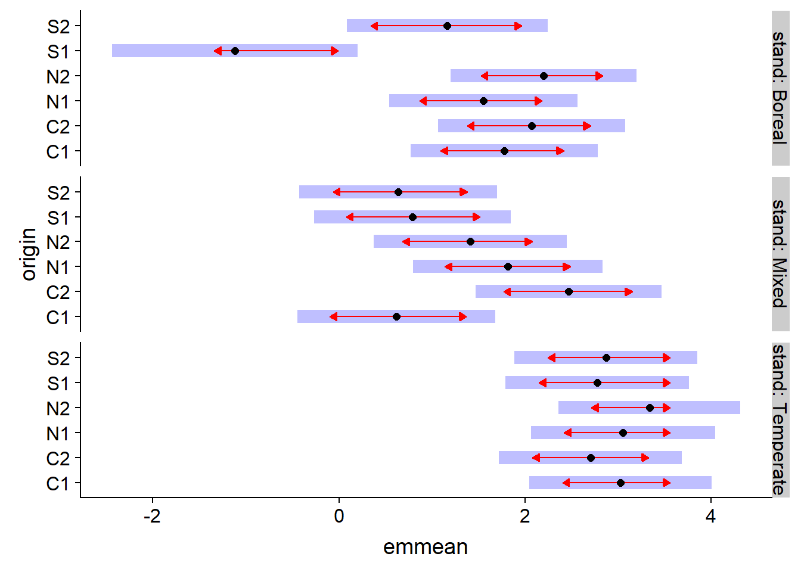
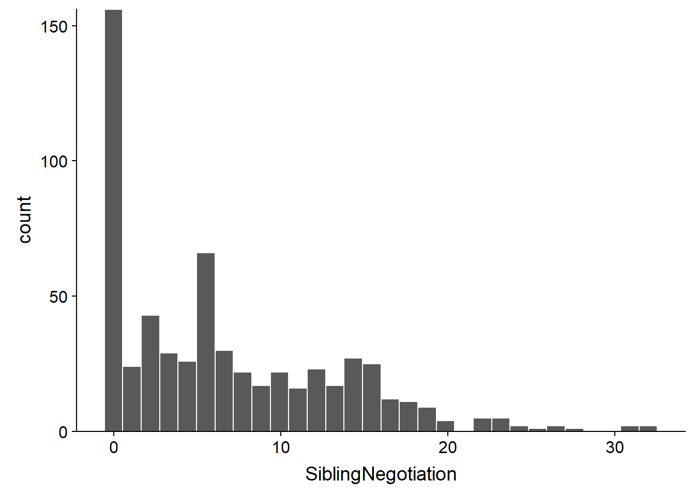
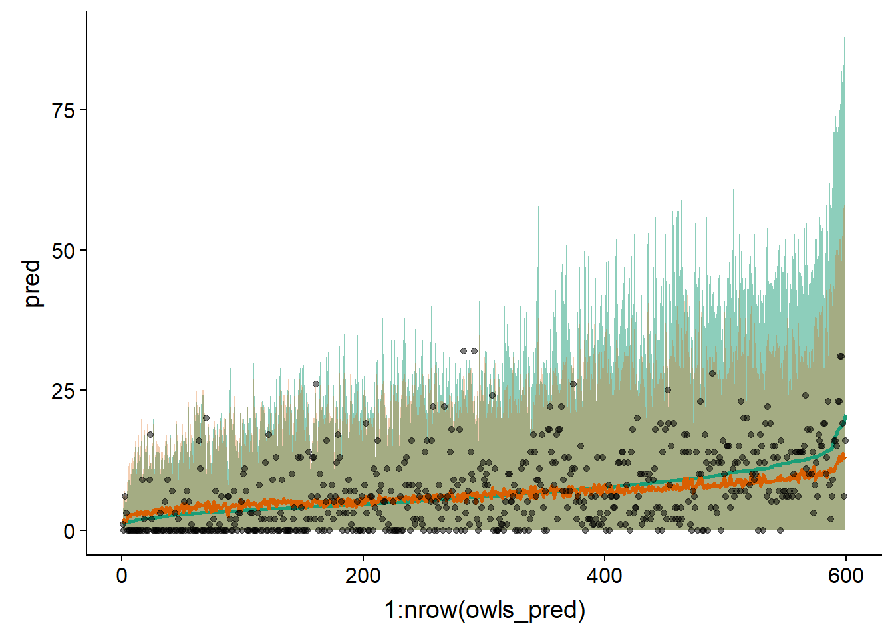

Modèles linéaires généralisés à effets mixtes 2
Contenu du cours
Dans ce cours, nous présenterons différents modèles qui permettent de traiter les données de comptage pour lesquelles la distribution de Poisson ne s’applique pas exactement. En particulier:
les données surdispersées (modèle binomial négatif);
les données s’exprimant comme des taux (comptages par unité de temps, d’espace, etc.); et
les données avec excès de zéros.
Modèle binomial négatif
Distribution binomiale négative
Comme la distribution de Poisson, la distribution binomiale négative permetde représenter des données de comptage, c’est à dire des entiers \(\ge 0\).
Historiquement, le nom “binomiale négative” vient du fait que cette distribution représente le nombre d’échecs avant d’obtenir un certain nombre de succès dans une expérience binomiale. Cependant, afin d’utiliser cette distribution dans un modèle de régression, une définition plus générale de la distribution est davantage appropriée.
Selon cette définition, si nous avons un processus où chaque observation suit une distribution de Poisson avec sa propre moyenne \(\lambda\) et que ces valeurs \(\lambda\) varient aléatoirement d’une observation à l’autre selon une distribution gamma, alors la distribution obtenue correspond à la loi binomiale négative. En pratique, nous ne modéliserons pas cette variation à deux niveaux, mais cette vision de la distribution binomiale explique pourquoi elle représente bien la surdispersion de données de comptage.
La distribution binomiale négative notée \(\text{NB}(\mu, \theta)\) dépend des paramètre \(\mu\) (moyenne) et \(\theta\) (paramètre de dispersion). La variance de la distribution est \(\mu + \mu^2 / \theta\), donc un \(\theta\) plus petit signifie une variance plus grande. Ci-dessous, nous comparons la distribution de Poisson avec \(\lambda\) = 10 à des distributions binomiales négatives avec \(\mu\) = 10 et \(\theta\) = 1 ou 3.

Dans le contexte d’un modèle de régression (GLM ou GLMM), la moyenne \(\mu\) est généralement reliée au prédicteur linéaire par un lien logarithmique, comme pour la régression de Poisson.
\[y \sim \text{NB}(\mu, \theta)\]
\[\log \mu = \beta_0 + \sum_{i=1}^m \beta_i x_i\]
Ce modèle constitue un GLM à proprement dit seulement si \(\theta\) est connu. Si on souhaite estimer \(\theta\) à partir des données, on peut procéder par itération. À partir d’une valeur initiale choisie pour \(\theta\), on ajuste les autres paramètres comme pour un GLM, puis on utilise la variance résiduelle pour estimer \(\theta\) et ainsi de suite jusqu’à ce que les estimés convergent vers des valeurs stables. Dans R, cette méthode est implémentée par les fonctions glm.nb du package MASS (pour des modèles sans effet aléatoires) et glmer.nb du package lme4 (pour des GLMM).
Exemple: Adaptation locale de l’érable
Le jeu de données acer_transplant.csv contient des données d’une expérience visant à comparer la germination de semences d’érable à sucre provenant de différentes origines géographiques dans trois types de forêt (boréale, mixte et tempérée).
Solarik, K.A.,Messier, C., Ouimet, R., Bergeron, Y., Gravel, D. (2018). Local adaptation of trees at the range margins impact range shifts in the face of climate change. Global Ecology and Biogeography, DOI:10.1111/geb.12829.
acer <- read.csv("../donnees/acer_transplant.csv")
str(acer)## 'data.frame': 216 obs. of 6 variables:
## $ stand : Factor w/ 3 levels "Boreal","Mixed",..: 1 1 1 1 1 1 1 1 1 1 ...
## $ site : Factor w/ 12 levels "Ashuapmushuan",..: 1 1 1 1 1 1 1 1 1 1 ...
## $ origin : Factor w/ 6 levels "C1","C2","N1",..: 3 5 2 6 1 3 4 5 6 1 ...
## $ first : num 28 0 1 0 6 ...
## $ second : num 18 0 0 0 2 ...
## $ survival: num 0.643 0 0 0 0.333 ...Les traitements sont donc origin (population d’origine) et stand (type de forêt). Quatre sites ont été étudiés dans chaque type de forêt avec 3 réplicats par site, donc nous prévoyons un effet aléatoire de site. Finalement, la réponse qui nous intéresse est first, soit le nombre de semis comptés la première année après l’ensemencement des parcelles.
En faisant un histogramme du nombre de semis tous traitements confondus, il apparaît que le jeu de données contient plusieurs valeurs près de 0 ainsi que quelques très grandes valeurs (> 50). Cela pourrait suggérer de la surdispersion, mais il est important d’évaluer celle-ci d’après les résidus du modèle, pas la réponse brute.
ggplot(acer, aes(x = first)) +
geom_histogram(color = "white") +
scale_y_continuous(expand = c(0, 0))
Voici maintenant la réponse illustrée pour chaque combinaison d’une origine et d’un type de forêt. La surdispersion de la réponse semble encore apparente.
ggplot(data = acer, aes(x = origin, y = first, color = stand)) +
geom_point(position = position_jitterdodge(jitter.width = 0.2, dodge.width = 0.4)) +
scale_color_brewer(palette = "Dark2")
Notez l’utilisation de position_jitterdodge dans ggplot. La partie dodge.width (entre 0 et 1) contrôle l’espacement horizontal entre les points de différentes couleurs, tandis que jitter.width contrôle le déplacement horizontal aléatoire des points de chaque couleur, afin de distinguer les valeurs répétées.
Régression de Poisson
Nous estimons d’abord les paramètres du GLMM de Poisson, incluant l’interaction entre population d’origine et type de forêt, ainsi que l’effet aléatoire du site. Nous choisissons aussi l’optimiseur BOBYQA en raison d’un problème de convergence avec l’optimisateur par défaut.
library(lme4)
acer_p <- glmer(first ~ stand * origin + (1 | site), data = acer, family = poisson,
control = glmerControl(optimizer = "bobyqa"))En faisant le test du \(\chi^2\), nous constatons une dispersion importante et statistiquement significative.
chi2 <- sum(residuals(acer_p, "pearson")^2)
chi2 / df.residual(acer_p)## [1] 11.00471 - pchisq(chi2, df = df.residual(acer_p))## [1] 0Cette surdispersion est aussi apparente en simulant à partir du modèle ajusté pour produire des intervalles de prédiction de 95%, qui sont beaucoup trop étroits comparé aux données observées.
sim_acer_p <- simulate(acer_p, nsim = 1000, re.form = NULL)
acer_pred <- mutate(acer, pred = predict(acer_p, type = "response"),
q025 = apply(sim_acer_p, 1, quantile, probs = 0.025),
q975 = apply(sim_acer_p, 1, quantile, probs = 0.975)) %>%
arrange(pred)
ggplot(acer_pred, aes(x = 1:nrow(acer_pred), y = pred, ymin = q025, ymax = q975)) +
geom_ribbon(alpha = 0.3) +
geom_line() +
geom_point(aes(y = first))
Note: Dans le code ci-dessus, nous avons appelé predict et simulate sans fournir de jeu de données newdata. Dans ce cas, les prédictions sont réalisés à partir des rangées du jeu de données original. La fonction arrange(pred) ordonne le jeu de données en fonction des valeurs prédites, ce qui aide à la visualisation; pour le graphique, l’axe des \(x\) représente seulement la position de chaque rangée dans le jeu de données ainsi ordonné.
Régression binomiale négative
Voici le modèle binomial négatif correspondant avec glmer.nb. Notez que le code est identique au modèle de Poisson, sauf pour l’argument family, qui n’est pas nécessaire car la fonction glmer.nb implique une distribution binomiale négative.
acer_nb <- glmer.nb(first ~ stand * origin + (1 | site), acer,
control = glmerControl(optimizer = "bobyqa"))Avec ce modèle, les résidus suivent le niveau de dispersion attendu.
chi2 <- sum(residuals(acer_nb, "pearson")^2)
chi2/df.residual(acer_nb)## [1] 1.1081411-pchisq(chi2, df = df.residual(acer_nb))## [1] 0.1428505Nous utilisons la même méthode que précédemment pour illustrer les intervalles de prédiction pour chaque observation du jeu de données.
sim_acer_nb <- simulate(acer_nb, nsim = 1000, re.form = NULL)
acer_pred <- mutate(acer, pred = predict(acer_nb, type = "response"),
q025 = apply(sim_acer_nb, 1, quantile, probs = 0.025),
q975 = apply(sim_acer_nb, 1, quantile, probs = 0.975)) %>%
arrange(pred)
ggplot(acer_pred, aes(x = 1:nrow(acer_pred), y = pred, ymin = q025, ymax = q975)) +
geom_ribbon(alpha = 0.3) +
geom_line() +
geom_point(aes(y = first))
Sachant que l’ajustement du modèle est bon, nous pouvons maintenant inspecter les estimés des coefficients. Notez que dans la deuxième ligne du sommaire, Negative Binomial(0.9232) nous indique la valeur de \(\theta\) estimée pour ce modèle (0.9232). Il s’agit d’un \(\theta\) assez petit, donc la variance des comptages est importante.
summary(acer_nb)## Generalized linear mixed model fit by maximum likelihood (Laplace
## Approximation) [glmerMod]
## Family: Negative Binomial(0.9232) ( log )
## Formula: first ~ stand * origin + (1 | site)
## Data: acer
## Control: glmerControl(optimizer = "bobyqa")
##
## AIC BIC logLik deviance df.resid
## 1370.5 1438.0 -665.2 1330.5 196
##
## Scaled residuals:
## Min 1Q Median 3Q Max
## -0.9296 -0.7008 -0.3281 0.3474 4.7128
##
## Random effects:
## Groups Name Variance Std.Dev.
## site (Intercept) 0.6169 0.7854
## Number of obs: 216, groups: site, 12
##
## Fixed effects:
## Estimate Std. Error z value Pr(>|z|)
## (Intercept) 1.7753 0.5130 3.461 0.000538 ***
## standMixed -1.1572 0.7461 -1.551 0.120921
## standTemperate 1.2487 0.7163 1.743 0.081291 .
## originC2 0.2932 0.4661 0.629 0.529253
## originN1 -0.2226 0.4671 -0.476 0.633740
## originN2 0.4228 0.4594 0.920 0.357337
## originS1 -2.8949 0.6301 -4.594 4.34e-06 ***
## originS2 -0.6121 0.5116 -1.196 0.231533
## standMixed:originC2 1.5574 0.6917 2.252 0.024354 *
## standTemperate:originC2 -0.6146 0.6403 -0.960 0.337133
## standMixed:originN1 1.4179 0.6862 2.066 0.038808 *
## standTemperate:originN1 0.2509 0.6469 0.388 0.698078
## standMixed:originN2 0.3708 0.6887 0.538 0.590266
## standTemperate:originN2 -0.1115 0.6334 -0.176 0.860280
## standMixed:originS1 3.0669 0.8132 3.771 0.000162 ***
## standTemperate:originS1 2.6444 0.7677 3.444 0.000572 ***
## standMixed:originS2 0.6308 0.7253 0.870 0.384462
## standTemperate:originS2 0.4570 0.6736 0.678 0.497458
## ---
## Signif. codes: 0 '***' 0.001 '**' 0.01 '*' 0.05 '.' 0.1 ' ' 1##
## Correlation matrix not shown by default, as p = 18 > 12.
## Use print(x, correlation=TRUE) or
## vcov(x) if you need itPuisque nous avons l’interaction de deux prédicteurs catégoriels, les coefficients nous donnent les différences entre les valeurs du prédicteur linéaire (donc le log du nombre moyen de semis) entre chaque combinaison des traitements et les valeurs de référence (ici, originC1 et standBoreal). Afin de comparer rapidement les différents traitements, le package emmeans peut être utile. Ce package réalise des comparaisons multiples, un peu comme le test de Tukey vu pour l’ANOVA, mais est applicable à différents types de modèles, incluant les GLMM.
Dans l’exemple ci-dessous, emmeans(acer_nb, ~ origin | stand) indique de comparer les effets moyens des différentes origines à l’intérieur de chaque type de forêt. Ces comparaisons sont affichées avec la fonction plot.
library(emmeans)
plot(emmeans(acer_nb, ~ origin | stand), comparisons = TRUE)
Dans ce graphique, l’axe horizontal emmean montre l’effet moyen de chaque traitement sur l’échelle du prédicteur linéaire (donc le logarithme du nombre moyen de semis). Les aires ombragées montrent l’intervalle de confiance à 95% pour chaque moyenne, tandis que les flèches rouges (obtenues en spécifiant comparisons = TRUE dans plot) indiquent quels effets sont significativement différents. La différence entre deux traitements n’est pas significative si les flèches se chevauchent.
Modèles pour les taux
Supposons que nous voulons analyser des données sur l’abondance (nombre d’individus) d’une espèce sur différentes parcelles. Cependant, la taille des placettes diffère, donc on s’attend à ce qu’à densité de population égale, l’abondance augmente proportionnellement à la taille des placettes.
Dans ce cas, on pourrait modéliser directement la densité de population (individus / m\(^2\)). Cependant, cette méthode comporte plusieurs inconvénients. Nous perdons l’information sur les comptages, ce qui nous empêche d’utiliser la distribution de Poisson ou binomiale négative. De plus, cette méthode considérerait la présence de 3 individus sur 1 m\(^2\) comme équivalente à celle de 12 individus sur 4 m\(^2\), même si ces deux résultats ne sont pas statistiquement équivalents en raison d’une différente de taille d’échantillon.
Une meilleure solution est d’adapter le modèle de régression de Poisson.
Par exemple, supposons que le nombre d’individus \(y\) dans une placette suit une distribution de Poisson de moyenne \(\lambda = \rho A\), où \(\rho\) est la densité de population et \(A\) est la superficie de la placette. Dans ce cas, si nous voulons modéliser \(\log \rho\) en fonction des prédicteurs \(x_i\):
\[\log \rho = \beta_0 + \beta_1 x_1 + ...\]
Nous pouvons ré-écrire \(\rho\) comme la rapport \(\lambda / A\) et utiliser les propriétés des logarithmes:
\[\log \rho = \log(\lambda / A) = \log \lambda - \log A \]
\[\log \lambda = \log A + \beta_0 + \beta_1 x_1 + ...\]
Ainsi, le modèle peut être représenté comme une régression de Poisson, tant qu’on ajoute un terme \(\log A\), appelé offset, au prédicteur linéaire. Ce terme est différent des autres prédicteurs, car on n’estime pas de coefficient \(\beta\). Dans un sens, il s’agit d’un prédicteur auquel on aurait fixé le coefficient à 1, pour exprimer la supposition que le compte moyen est proportionnel à \(A\).
Exemple
Le jeu de données Owls du package glmmTMB présente les résultats d’une étude sur le comportement d’oisillons de l’effraie des clochers, une espèce de chouette.
Roulin et Bersier (2007) “Nestling barn owls beg more intensely in the presence of their mother than in the presence of their father.” Animal Behaviour 74: 1099-1110.
library(glmmTMB)
data(Owls)
str(Owls)## 'data.frame': 599 obs. of 8 variables:
## $ Nest : Factor w/ 27 levels "AutavauxTV","Bochet",..: 1 1 1 1 1 1 1 1 1 1 ...
## $ FoodTreatment : Factor w/ 2 levels "Deprived","Satiated": 1 2 1 1 1 1 1 2 1 2 ...
## $ SexParent : Factor w/ 2 levels "Female","Male": 2 2 2 2 2 2 2 1 2 1 ...
## $ ArrivalTime : num 22.2 22.4 22.5 22.6 22.6 ...
## $ SiblingNegotiation: int 4 0 2 2 2 2 18 4 18 0 ...
## $ BroodSize : int 5 5 5 5 5 5 5 5 5 5 ...
## $ NegPerChick : num 0.8 0 0.4 0.4 0.4 0.4 3.6 0.8 3.6 0 ...
## $ logBroodSize : num 1.61 1.61 1.61 1.61 1.61 ...La variable réponse, SiblingNegotiation, représente le nombre de cris émis par les oisillons d’un nid en attente de nourriture, en fonction de leur niveau de faim (FoodTreatment), du sexe du parent en quête de nourriture (SexParent) et du temps d’arrivée de ce parent (ArrivalTime). Puisque des mesures répétées ont été effectuées sur chaque nid, Nest est un effet aléatoire. Finalement, puisque le nombre d’oisillons (BroodSize) varie dans chaque nid, cette variable sera utilisée comme offset afin de modéliser le nombre de cris par oisillon.
Voici la distribution de la variable réponse. Notez que plus de 25% des observations sont de 0.
ggplot(Owls, aes(x = SiblingNegotiation)) +
geom_histogram(color = "white") +
scale_y_continuous(expand = c(0, 0))
Nous commençons par ajuster un GLMM de Poisson avec offset:
owls_p <- glmer(SiblingNegotiation ~ FoodTreatment * SexParent + ArrivalTime +
(1|Nest) + offset(logBroodSize), data = Owls, family = poisson)
chi2 <- sum(residuals(owls_p, type = "pearson")^2)
chi2 / df.residual(owls_p)## [1] 5.4473611 - pchisq(chi2, df = df.residual(owls_p))## [1] 0Puisque le test du \(\chi^2\) montre une surdispersion importante, nous essayons ensuite un modèle binomiale négatif.
owls_nb <- glmer.nb(SiblingNegotiation ~ FoodTreatment * SexParent + ArrivalTime +
(1|Nest) + offset(logBroodSize), data = Owls)
chi2 <- sum(residuals(owls_nb, type = "pearson")^2)
chi2 / df.residual(owls_nb)## [1] 0.8518262Dans ce cas, le coefficient de dispersion est un peu inférieur à 1. En consultant le sommaire du modèle, nous remarquons que FoodTreatment et ArrivalTime présentent des effets significatifs. Notez l’estimé \(\theta = 0.8847\) en deuxième ligne.
summary(owls_nb)## Generalized linear mixed model fit by maximum likelihood (Laplace
## Approximation) [glmerMod]
## Family: Negative Binomial(0.8847) ( log )
## Formula: SiblingNegotiation ~ FoodTreatment * SexParent + ArrivalTime +
## (1 | Nest) + offset(logBroodSize)
## Data: Owls
##
## AIC BIC logLik deviance df.resid
## 3477.5 3508.3 -1731.8 3463.5 592
##
## Scaled residuals:
## Min 1Q Median 3Q Max
## -0.9069 -0.7794 -0.2060 0.4465 5.5441
##
## Random effects:
## Groups Name Variance Std.Dev.
## Nest (Intercept) 0.1095 0.3309
## Number of obs: 599, groups: Nest, 27
##
## Fixed effects:
## Estimate Std. Error z value Pr(>|z|)
## (Intercept) 3.50710 0.63229 5.547 2.91e-08
## FoodTreatmentSatiated -0.76653 0.16109 -4.758 1.95e-06
## SexParentMale -0.01044 0.14213 -0.073 0.941
## ArrivalTime -0.11515 0.02513 -4.583 4.58e-06
## FoodTreatmentSatiated:SexParentMale 0.17349 0.20099 0.863 0.388
##
## (Intercept) ***
## FoodTreatmentSatiated ***
## SexParentMale
## ArrivalTime ***
## FoodTreatmentSatiated:SexParentMale
## ---
## Signif. codes: 0 '***' 0.001 '**' 0.01 '*' 0.05 '.' 0.1 ' ' 1
##
## Correlation of Fixed Effects:
## (Intr) FdTrtS SxPrnM ArrvlT
## FdTrtmntStt -0.135
## SexParentMl -0.120 0.550
## ArrivalTime -0.979 0.011 -0.021
## FdTrtmS:SPM 0.109 -0.743 -0.668 -0.017Voici l’intervalle de prédiction à 95% pour ce modèle:
sim_owls_nb <- simulate(owls_nb, nsim = 1000, re.form = NULL, newdata = Owls)
owls_pred <- mutate(Owls, pred = predict(owls_nb, type = "response"),
q025 = apply(sim_owls_nb, 1, quantile, probs = 0.025),
q975 = apply(sim_owls_nb, 1, quantile, probs = 0.975)) %>%
arrange(pred)
ggplot(owls_pred, aes(x = 1:nrow(owls_pred), y = pred, ymin = q025, ymax = q975)) +
geom_ribbon(alpha = 0.3) +
geom_line() +
geom_point(aes(y = SiblingNegotiation))
Même si l’intervalle contient la plus grande partie des données, notez qu’il semble trop étroit à gauche du graphique et trop large à droite (lorsque la moyenne est élevée).
Vérifions maintenant si le modèle binomial négatif peut reproduire le nombre de zéros observés dans le jeu de données. Le code ci-dessous calcule pour chaque simulation (chaque colonne de sim_owls_nb) le nombre de zéros présents (sum(x == 0) compte 1 chaque fois que l’expression x == 0 est vraie). Nous prédisons un nombre de zéros entre 90 et 125 pour 95% des réalisations du modèle.
nb_zeros <- apply(sim_owls_nb, 2, function(x) sum(x == 0))
c(quantile(nb_zeros, probs = 0.025), quantile(nb_zeros, probs = 0.975))## 2.5% 97.5%
## 88 125À titre de comparaison, les données contiennent 156 zéros.
sum(Owls$SiblingNegotiation == 0)## [1] 156Modèles avec excès de zéros
L’exemple précédent montre qu’un excès de zéros pose un problème différent de celui des données surdispersées. La surdispersion produit plus de comptages faibles et élevés par rapport à la distribution prévue. En présence d’un excès de zéros, si ces zéros supplémentaires étaient retirés, on retrouverait la distribution supposée.
Pour modéliser une réponse \(y\) avec un excès de zéros, on crée un modèle en deux parties:
avec une probabilité de \(p_0\), on a un “zéro structurel”, soit \(y = 0\) assurément;
avec la probabilité restante \((1 - p_0)\), \(y\) suit une distribution de Poisson ou binomiale négative; bien sûr, cette distribution peut aussi occasionnellement produire des zéros.
Le modèle résultant se nomme zero-inflated Poisson ou zero-inflated negative binomial selon le cas.
Par exemple, une espèce peut être complètement absente d’un site, ce qui serait un zéro structurel (on observerait toujours zéro pour chaque observation). Si elle est présente, le nombre d’individus observé sur une placette donnée varie selon une distribution de Poisson, qui peut aussi produire des zéros.
Dans le modèle avec excès de zéro, la deuxième composante (modèle de comptage) suit généralement une distribution de Poisson ou binomiale négative avec lien logarithmique, par exemple \(\log \lambda = \beta_0 + \beta_1 x_1 + ...\) (Poisson)
Quant à la probabilité d’obtenir un zéro structurel, \(p_0\), elle est modélisée par un lien logit, comme dans une régression logistique: \(\text{logit}(p_0) = \gamma_0 + \gamma_1 z_1 + ...\).
Nous avons choisi des lettres différentes pour souligner que les prédicteurs apparaissant dans le modèle pour \(\lambda\) et pour \(p_0\) ne sont pas nécessairement les mêmes. On peut notamment estimer une \(p_0\) constante, indépendante des prédicteurs; dans ce cas seule l’ordonnée à l’origine apparaîtrait dans le modèle.
Exemple
À partir du jeu de données Owls vu dans la section précédente, nous estimons de nouveau un GLMM binomial négatif, cette fois à partir de la fonction glmmTMB du package glmmTMB. Cette fonction permet d’ajuster certains modèles non inclus dans lme4, dont ceux avec excès de zéros. Notez que family = nbinom2 correspond à la distribution binomiale négative telle que vue précédemment.
owls_nb <- glmmTMB(SiblingNegotiation ~ FoodTreatment * SexParent + ArrivalTime +
(1|Nest) + offset(logBroodSize), family = nbinom2, data=Owls)Voici maintenant une version de ce modèle avec un excès de zéros. Le modèle pour \(p_0\) est donné par l’argument ziformula de glmmTMB. Dans notre exemple, ziformula = ~1 indique qu’on estime seulement l’ordonnée à l’origine, donc \(p_0\) est constante.
owls_zinb <- glmmTMB(SiblingNegotiation ~ FoodTreatment * SexParent + ArrivalTime +
(1|Nest)+offset(logBroodSize),
family = nbinom2, ziformula = ~1, data=Owls)
summary(owls_zinb)## Family: nbinom2 ( log )
## Formula:
## SiblingNegotiation ~ FoodTreatment * SexParent + ArrivalTime +
## (1 | Nest) + offset(logBroodSize)
## Zero inflation: ~1
## Data: Owls
##
## AIC BIC logLik deviance df.resid
## 3416.4 3451.5 -1700.2 3400.4 591
##
## Random effects:
##
## Conditional model:
## Groups Name Variance Std.Dev.
## Nest (Intercept) 0.06092 0.2468
## Number of obs: 599, groups: Nest, 27
##
## Overdispersion parameter for nbinom2 family (): 2.31
##
## Conditional model:
## Estimate Std. Error z value Pr(>|z|)
## (Intercept) 2.87588 0.49394 5.822 5.8e-09
## FoodTreatmentSatiated -0.40500 0.13480 -3.004 0.00266
## SexParentMale -0.07360 0.10255 -0.718 0.47290
## ArrivalTime -0.08294 0.01980 -4.189 2.8e-05
## FoodTreatmentSatiated:SexParentMale 0.15878 0.16235 0.978 0.32807
##
## (Intercept) ***
## FoodTreatmentSatiated **
## SexParentMale
## ArrivalTime ***
## FoodTreatmentSatiated:SexParentMale
## ---
## Signif. codes: 0 '***' 0.001 '**' 0.01 '*' 0.05 '.' 0.1 ' ' 1
##
## Zero-inflation model:
## Estimate Std. Error z value Pr(>|z|)
## (Intercept) -1.276 0.122 -10.46 <2e-16 ***
## ---
## Signif. codes: 0 '***' 0.001 '**' 0.01 '*' 0.05 '.' 0.1 ' ' 1Notez que le paramètre \(\theta\) du modèle binomial négatif est de 2.31, comparativement à 0.89 pour le modèle owls_nb. Cela est dû au fait qu’en traitant l’excès de zéros séparément, la surdispersion des comptages apparait moins grande.
Les résultats du modèle de \(p_0\) sont donnés dans la dernière section. L’ordonnée à l’origine de -1.276 équivaut au logit de \(p_0\). On peut obtenir la probabilité correspondante avec la fonction plogis.
plogis(-1.276)## [1] 0.2182319Nous avons donc 22% de probabilité d’obtenir un zéro structurel.
Le modèle avec excès de zéros offre un meilleur ajustement selon l’AIC.
AIC(owls_nb)## [1] 3477.534AIC(owls_zinb)## [1] 3416.383Nous pouvons aussi comparer les prédictions des deux modèles sur un même graphique.
sim_owls_nb <- simulate(owls_nb, nsim = 1000, re.form = NULL, newdata = Owls)
sim_owls_zi <- simulate(owls_zinb, nsim = 1000, re.form = NULL, newdata = Owls)
owls_pred <- mutate(Owls, pred = predict(owls_nb, type = "response"),
q025 = apply(sim_owls_nb, 1, quantile, probs = 0.025),
q975 = apply(sim_owls_nb, 1, quantile, probs = 0.975),
pred_zi = predict(owls_zinb, type = "response"),
q025_zi = apply(sim_owls_zi, 1, quantile, probs = 0.025),
q975_zi = apply(sim_owls_zi, 1, quantile, probs = 0.975)) %>%
arrange(pred)
ggplot(owls_pred, aes(x = 1:nrow(owls_pred), y = pred, ymin = q025, ymax = q975)) +
geom_ribbon(alpha = 0.5, fill = "#1b9e77") +
geom_ribbon(aes(ymin = q025_zi, ymax = q975_zi), alpha = 0.3, fill = "#d95f02") +
geom_line(color = "#1b9e77", size = 1) +
geom_line(aes(y = pred_zi), color = "#d95f02", size = 1) +
geom_point(aes(y = SiblingNegotiation), alpha = 0.5)
Nous remarquons que le modèle avec excès de zéros (en orange) représente mieux l’étendue des données, avec un maximum de l’intervalle plus élevé dans la partie gauche et moins élevé à droite. Ici, les données sont ordonnées sur l’axe des \(x\) selon les prédictions du modèle sans excès de zéros.